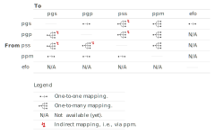

Introduction
The data provided by quincunx includes various identifiers. This document serves as a quick reference list for the identifiers you might find in objects returned by quincunx functions.
Some of these identifiers are externally defined while others are
created by quincunx to aid linking rows among tables. The external
identifiers have global scope, i.e., their meaning is valid regardless
of context, e.g., a PGS identifier is unique and always identifies the
same polygenic score. Identifiers whose scope is local are surrogate IDs
that help relating data observations across tables, and do not have any
other special meaning outside the tables they appear
(sample_id, effect_size_id,
classification_metrics_id and
other_metrics_id.)
| Variable | Name | Acronym | Scope | Database source |
|---|---|---|---|---|
pgs_id, child_pgs_id
|
Polygenic Score ID | PGS | global | PGS Catalog |
pgp_id |
Polygenic Publication ID | PGP | global | PGS Catalog |
pss_id |
PGS Catalog Sample Set ID | PSS | global | PGS Catalog |
ppm_id |
PGS Performance Metric ID | PPM | global | PGS Catalog |
efo_id, parent_efo_id
|
Experimental Factor Ontology ID | EFO | global | Experimental Factor Ontology |
pubmed_id |
PubMed ID | PMID | global | PubMed.gov |
study_id |
GWAS Catalog Study ID | GCST | global | GWAS Catalog |
rsID |
Reference SNP Cluster ID | rsID | global | dbSNP |
sample_id |
Sample ID | local | Generated by quincunx. | |
effect_size_id |
Effect Size ID | local | Generated by quincunx. | |
classification_metrics_id |
Classification Metrics ID | local | Generated by quincunx. | |
other_metrics_id |
Other Metrics ID | local | Generated by quincunx. |
Mapping between identifiers
In the table below you can see the type of mappings—one-to-one or
one-to-many—possible between the main PGS Catalog entity identifiers.
Those mappings indicated as N/A are not implemented yet. These mappings
are provided by a set of functions of the form
<from_id>_to_<to_id>(), e.g., the function
pgs_to_pgp() provides the mapping of PGS identifiers
(pgs_id) to PGP identifiers (pgp_id). You can
find all available id-mapping functions under Accession
identifier mapping.

As a technical side note, those mappings marked with ↯ are achieved
by successive requests to different endpoints, e.g., for the function
pss_to_pgs() to find the associated pgs_id
with one or more pss_id, it needs first to map
pss_id to ppm_id, and only then from those
obtained ppm_id to pgs_id.